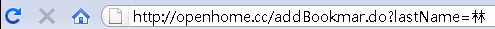

|
|
HTTP
請求參數，必須使用請求參數名稱與請求參數值，中間以等號（=）表示成對關係，現在問題來了，如果請求參數值本身包括=符號怎麼辦？又或許你想發送的請求
參數值是「http://openhome.cc」這個值呢？假設是GET請求，你不能直接這麼在網址列上鍵入：
在URI的規範中定義了一些保留字元（Reserved character），像是「:」、「/」、「?」、「&」、「=」、「@」、「%」等字元，在URI中都有它的作用，如果你要在請求參數上表達URI中的保留字元，必須在%字元之後以十六進位數值表示方式，來表示該字元的八個位元數值。 例如，「:」字元真正儲存時的八個位元為00111010，用十六進位數值來表示則為3A，所以必須使用「%3A」來表示「:」，「/」字元儲存時的八個 位元為00101111，用十六進位表示則為2F，所以必須使用「%2F」來表示「/」字元，所以想發送的請求參數值是「http: //openhome.cc」的話，則必須使用以下格式：
這是URI規範中的百分比編碼（Percent-Encoding），也就是俗稱的URI編碼或URL編碼。如果你想得知，某個字元的URL編碼為何，在Java中可以使用java.net.URLEncoder類別的靜態encode()方法來為我們作這個編碼的動作（相對地，要解碼則是使用java.net.URLDecoder的靜態decode()方法）。例如： String text = URLEncoder.encode("http://openhome.cc ", "ISO-8859-1");
知道這些有什麼用？例如，你想給某人一段URL，讓他可以直接點選就可以連到你想要讓他看到的網頁，你貼給他的URL在請求參數部份就要注意URL編碼。 不過在URI之前，HTTP在GET、POST時也對保留字作了規範，這與URI規範的保留字有所差別，其中一個差別就是在URI規範中，空白字元是編碼為%20，而在HTTP規範中空白是編碼為「+」，java.net.URLEncoder類別的靜態方法encode()產生的字串，空白字元就是編碼為「+」。 另一個差別就是，URI規範的URL編碼，針對的是字元UTF-8編碼的八個位元數值，如果請求參數都是ASCII字元，那沒什麼問題，因為在UTF-8編碼在ASCII字元的編碼部份是相容的，也就是使用一個位元組，編碼方式就如先前所述。 但在非ASCII字元方面，例如中文，在UTF-8的編碼下，會使用三個位元組來表示。例如「林」這個字在UTF-8編碼下的三個位元組，對應至十六進位 數值表示就是E6、9E、97，所以在URI規範下，請求參數中要包括「林」這個中文，表示方式就是「%E6%9E%97」。例如：
OK！有些人會直接打開瀏覽器鍵入以下的內容，告訴我：「URL也可以直接打中文啊！」  不過你可以將網址列複製，貼到純文字檔案中，你就會看到URI編碼的結果，這其實是現在的瀏覽器很聰明，會自動將上述的URI編碼顯示為中文。無論如何，在URI規範上若如上發送請求參數，伺服端處理請求參數時，必須使用UTF-8編碼來取得正確的「林」字元。 然而在HTTP規範下的URL編碼，並不限使用UTF-8，例如在一個BIG5網頁中，若表單若使用GET發送「林」這個中文字，則網址列會出現：
這是因為「林」這個中文字的BIG5編碼為兩個位元組，以十六進位表示的話，則分別為「AA」、「4C」，如果你透過表單發送，由於網頁是BIG5編碼， 則瀏覽器會自動將「林」編碼為「%AA%4C」，伺服端處理請求參數時，就必須指定BIG5編碼，以取得正確的「林」中文字元。 若使用java.net.URLEncoder類別的靜態encode()方法來為我們作這個編碼的動作，則可以如下得到「%AA%4C」的結果：
同理可推，如果網頁是UTF-8編碼，而你透過表單發送，則瀏覽器會自動將「林」編碼為「%E6%9E%97」。若使用java.net.URLEncoder類別的靜態encode()方法來為我們作這個編碼的動作，則可如下得到「%E6%9E%97」的結果： String text = URLEncoder.encode("林", "UTF-8");
這些是對於URL編碼的必要認識，當你發送表單、使用Tomcat等容器或是Ajax等時，都要有這個基本認識，才能進一步處理所遇到的亂碼問題。 |